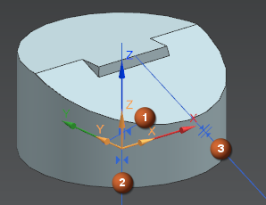
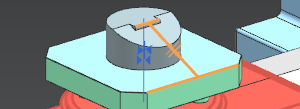
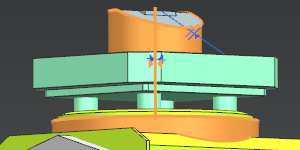
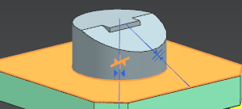

Zoom in on the part and identify the assembly constraints that were created to position it.

(1) A Touch constraint is used to place the bottom of the part on the table.
(2) An Align constraint is used to center the part on the C-axis.
(3) A Parallel constraint is used to align the part with an edge on the table.
In the Part Mounting dialog box, in the Placement group, from the Positioning list, select Keep Assembly Constraints.
Click OK.
The Information window shows devices that are added and how old devices are replaced.
In the 5-Ax Mill Vertical B-Head C-Table dialog box, click OK.
Close the Information window.
In the Assembly Navigator, expand the Constraints node and, one by one, select the constraints.
The parallel constraint is reconnected between an edge on the part and an edge on the machine table.

The align constraint between cylindrical axes is reconnected as a generic Touch Align constraint.

The touch constraint between the lower flat face of the cylinder and the face of the machine table is reconnected.
